Projects and Documents
LemmaLoom keeps all of your work in projects. A project holds your documents and the codes, codings, memos, and links you add to them. The sets, groups, attributes, dictionaries, and saved queries you organize and analyze them with are kept there too. Generally, you want to keep all relevant material for a study in a single project. Most of LemmaLoom’s views only look at one project at a time.
This chapter exclusively uses examples drawn from the sample project called “Climate Debate”. “Climate Debate” contains eleven invented texts that discuss climate change. The texts consist of op-eds, columns, blog posts, and a speech; six were written by activists (e.g., “Running Out of Time”), while five were penned by skeptics (e.g., “The Models Keep Missing”). Additionally, there are three extra documents included in “Climate Debate”. “Heat Wave Report 2024” is a PDF file; “Carbon Tax Debate” is an imported online news article; and “Radio Debate” is a recorded and transcribed radio debate. Lastly, “Running Out of Time (German)” is a translation of “Running Out of Time”. Thus, altogether, there are 15 documents included. You can explore the project directly from inside LemmaLoom as well. Add it as a new project in the language of the interface by going to File ▸ Import ▸ Example Project. This will automatically import the “Climate Debate” project, making it the active project.
Key terms
All the codes, sets, groups, attributes, and dictionaries you define belong exclusively to their respective projects. Tags and custom analyzers belong to all your projects, as do queries saved for All Projects. Within a project, a document represents a piece of material. Document material can be plain text files, PDF documents, web pages, as well as transcripts of audio and video recordings. Translating a document will generate another document known as a translation (Chapter 9, Translations and Split View); this document is listed under its original and carries all tags assigned to its original.
Groups work similarly to folders in the navigation sidebar; each document sits in one group at most (or none). Groups are used mostly to keep the list of documents in order. The Code Matrix even allows combining its columns according to groups. Smart sets and queries can also pick documents by group. Sets are collections of documents used in analyses of certain documents or comparisons between multiple sets of documents. Any number of sets may contain the same document. A smart set contains documents based on specified criteria (for instance, having “Readership” greater than or equal to 100,000). A smart set automatically maintains its contents according to said criteria.
Tags (such as “op-ed” or “viral”) represent labels you create yourself. Tags can represent virtually anything meaningful to your research. One common list of tags applies across projects, documents, codes, memos, and links. Attributes refer to properties of each individual document (e.g., its “Stance” or its “Publication Date”). Once defined, attributes apply universally across an entire project.
Your project shelf, near the top of the sidebar, displays ten views, with Codebook first and Queries last. These very same views open for any set and any tag as well, covering only its documents. A scope refers to the documents a view operates upon. A scope can be a whole project, a set, or documents bearing a specific tag.
A few of these overlap with one another, and it pays off to know which one serves better in what situation before proceeding to your actual analysis. If you intend on comparing documents by a fact (stance or date, for example), define it as an attribute. Sets are useful for analyzing certain documents (i.e., limiting your scope). Smart sets prove convenient when an attribute or a tag can pick those documents for you. Groups only sort the list. Labels that should mean the same thing in every project go in tags.
Within “Climate Debate”, “Stance” is defined as an attribute. Hence Code Stats and the Code Matrix can break their results down by side. For the keyword list, which compares sets, two additional sets, “Activists” and “Skeptics”, were included. “Print” and “Online” represent groups that only sort the list. The tag “op-ed” marks one kind of text.
The navigation sidebar
The sidebar exists on the left side of the main window. Your list of projects is followed by everything inside your active project. Clicking the sidebar button located at the left edge of the toolbar will show or hide the sidebar. View ▸ Toggle Sidebar (⌃⌘S) performs the same action.
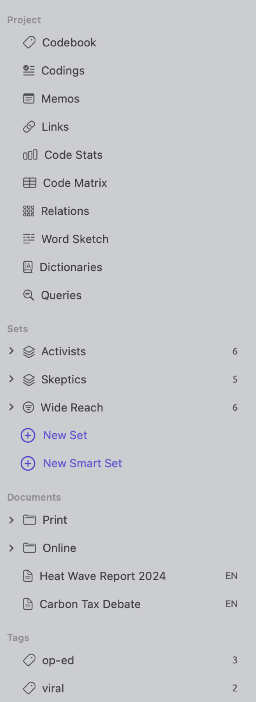
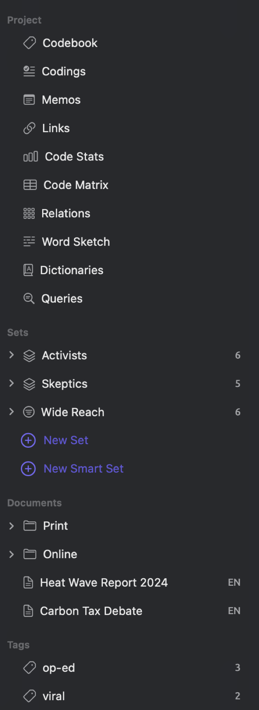
The sections of the sidebar from top to bottom are these:
| Section | What it lists |
|---|---|
| Favorites | Projects you have starred. The section appears once at least one project is a favorite. |
| Projects | All your projects in alphabetical order. The active project’s name is in bold. |
| Project | The project shelf of the active project (see The project shelf later in this chapter). |
| Sets | The sets and smart sets of the active project, each with its number of documents, followed by New Set and New Smart Set. |
| Documents | The groups of the active project, then the documents that are in no group. Translations are listed under their originals. |
| Tags | Every tag used on a document in the active project, with the number of documents that carry it. The section appears once at least one document has a tag. |
The Search Documents field is located at the very top, above everything else. What you write narrows down the sidebar to only those documents in the active project whose names contain what you are typing. Return opens the first result. Down Arrow lets you move into the list. Escape clears what you’ve typed and shows the full sidebar again. You can bring back a hidden sidebar and put the insertion point right into the search field by choosing Edit ▸ Find Document (⇧⌘F).
Rows begin with icons indicating the kind of each document. Audio is denoted by a waveform, video by a strip of film. Text, PDF, and web documents get a page icon. When documents don’t come with source files (e.g., a text imported from a REFI-QDA project), you will see a square with a pencil. Any color you gave a document tints its icon too. The row ends in a two-letter language code such as EN, DE, or ZH (FR for a French text); hover the mouse pointer over the code to see the language’s full name. Next to the code, a badge shows the degree of completion of the indexing process. Chapter 21, Analysis and Indexing talks about indexing.
| Badge | Meaning |
|---|---|
| None | The document is indexed and ready for every analysis. |
| Progress ring | The document is being indexed, or an analyzer is running on it. Hover the mouse pointer over the ring to see the stage and the percentage done. |
| Dotted circle | Waiting to be indexed. The document is in the queue, and indexing starts by itself. |
| Circle with a pause sign | Indexing is off. The document was imported without indexing. Index Now in Document Properties starts it (see Indexing later in this chapter). |
| Circle with a question mark | Language not supported for indexing. You can read and code the document, but lenses, the Grammar tab, and word sketches need English, German, or Chinese. |
| Red warning triangle | Indexing failed. Hover the mouse pointer over the triangle to read why. To try again, right-click the document and choose Retry Indexing. |


The sidebar displays the document’s name and icon in gray during indexing. It is possible to access, open, view, and code the document at this stage. The lens menu becomes active alongside the Grammar tab in the inspector once indexing completes.
When an audio, video, or PDF file is imported, a row for it first appears at the end of the Documents section. A progress indicator appears in the row until the file is ready as a document. When translating, a similar row appears below the original and shows both the target language and a progress ring.
Projects
Creating a project
“Climate Debate” is a project for one study. It features four attributes defined across its documents. The “Stance” attribute uses the picker data type. Values for “Stance” come from the pre-defined list “Activist”, “Skeptic”, and “Neutral”, which keeps them consistent. The report, the news article, and the radio debate are the neutral ones. The attribute “Readership” stores integers, while “Publication Date” stores dates. “Outlet” contains text, since its values can’t be listed in advance. As depicted below, the dialog has only the first two of these attributes defined.
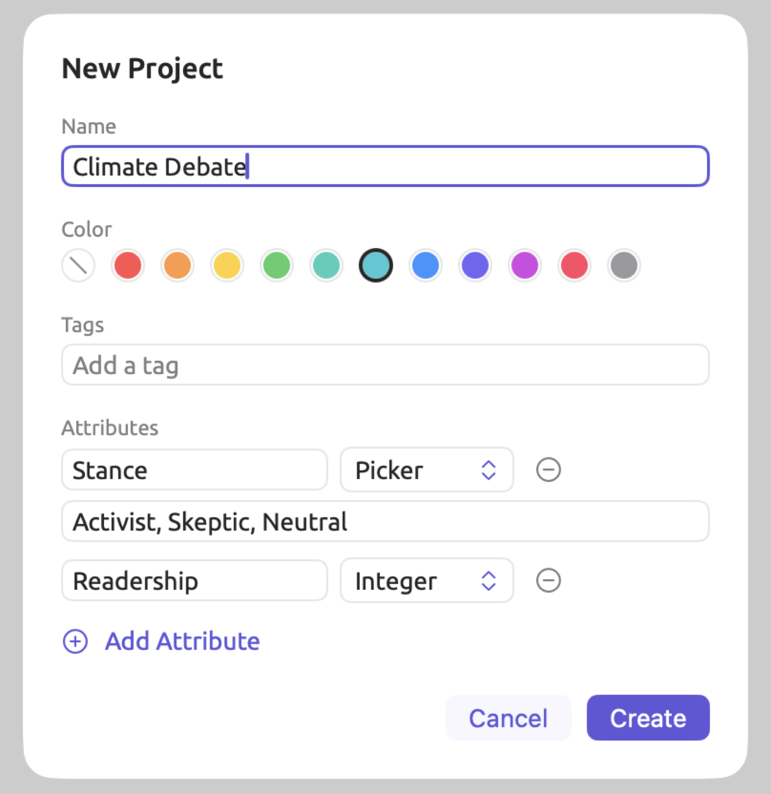
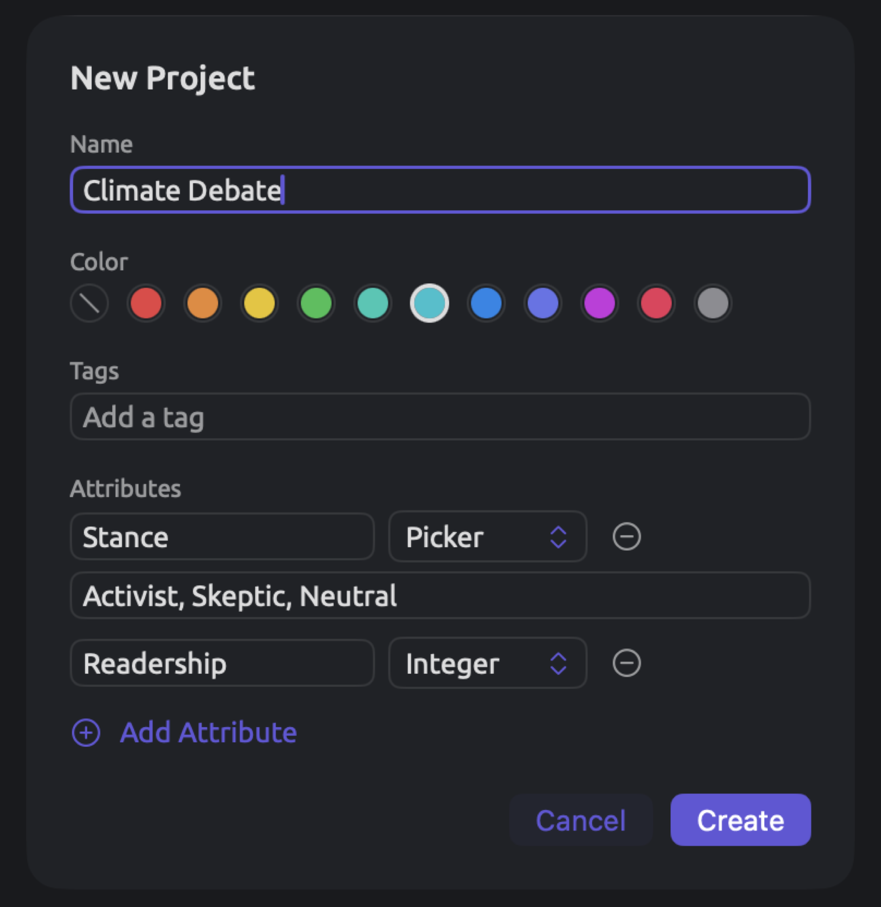
Creating a project entails these steps:
- Choose File ▸ New Project (⇧⌘N).
- Type a name for the project in Name. If you leave the field empty, the project is called New Project.
- To give the project a color, click one of the swatches next to Color. The first swatch, No color, is chosen at the start.
- To tag the project, type a tag in Tags and press Return. A comma also ends a tag.
- To set up attributes now, click Add Attribute under Attributes once for each attribute. Type its name and choose its Type. For a Picker, also type its choices in the rows below, one per row.
- Click Create, or press Return.
Once you create the project, LemmaLoom will set it as the active project. Chapter 4, Importing Material explains how to populate your project with documents.
Attributes come in six types. Text stores text, Date stores dates, Integer stores whole numbers, Decimal stores numbers with a decimal part, Boolean has yes/no options and uses checkboxes, and Picker stores one choice from a fixed list. Attribute types in Chapter 8, Sets, Groups, Tags, and Attributes shows how to match the appropriate type of attribute according to its intended use. Auto-complete features will suggest an existing attribute from your projects as you type an attribute’s name. If the name matches one of them, its type and choices are automatically carried over. Adding new attributes can happen later via Project Properties or a document’s properties, or directly from the Attributes window (Project ▸ Attributes). Chapter 8, Sets, Groups, Tags, and Attributes covers how documents get their values.
An exported LemmaLoom project can either serve as a backup or be shared among colleagues. To load the project, choose File ▸ Import ▸ LemmaLoom Archive. Another option is importing via File ▸ Import ▸ REFI-QDA Project; this loads a project created in another application that supports the REFI-QDA standard. You could alternatively open a .llz or .qdpx file with LemmaLoom from the Finder to import it the same way. Details on both formats can be found in Chapter 22, Exchanging and Exporting.
Switching between projects
Clicking on the name of any project under Projects or Favorites makes it the active project. Once selected, the project’s shelf, sets, documents, and tags fill the rest of the sidebar.
You are taken right back to where you were, starting with the project that was most recently used before quitting LemmaLoom. Every project has its own tabs, which are all restored along with the tab that was active when you revisit that project again. Furthermore, every open document in that project restores its enabled lenses as well as its scroll position. Any other document opened alongside it in split view returns as well. So does the state of the inspector.
Favorites
Projects can be listed at the top of the navigation sidebar as well. To do so, hover your mouse pointer over the project entry under Projects, and then click on the star icon that appears at the right of its row. Starred projects will then also appear in another section called Favorites. Clicking the star a second time, or using the project’s shortcut menu, will take a project off Favorites again.
The project’s shortcut menu
The following commands appear on your shortcut menu should you right-click or Control-click a project:
| Command | What it does |
|---|---|
| Add to Favorites, Remove from Favorites | Stars or unstars the project. |
| Rename | Turns the name into a text field. Type the new name and press Return; press Escape to keep the old one. Edit ▸ Undo Rename (⌘Z) restores it. |
| Properties | Opens Project Properties (see Project properties below). |
| Attributes | Opens the Attributes window, a table of every document’s attribute values. See The Attributes window in Chapter 8, Sets, Groups, Tags, and Attributes. |
| Codebook | Opens the project’s codebook in the Codebook window. |
| Word Sketch | Opens the Word Sketch window for the whole project. See Chapter 12, Word Sketch. |
| Delete Project | Deletes the project after asking (see Deleting a project below). |
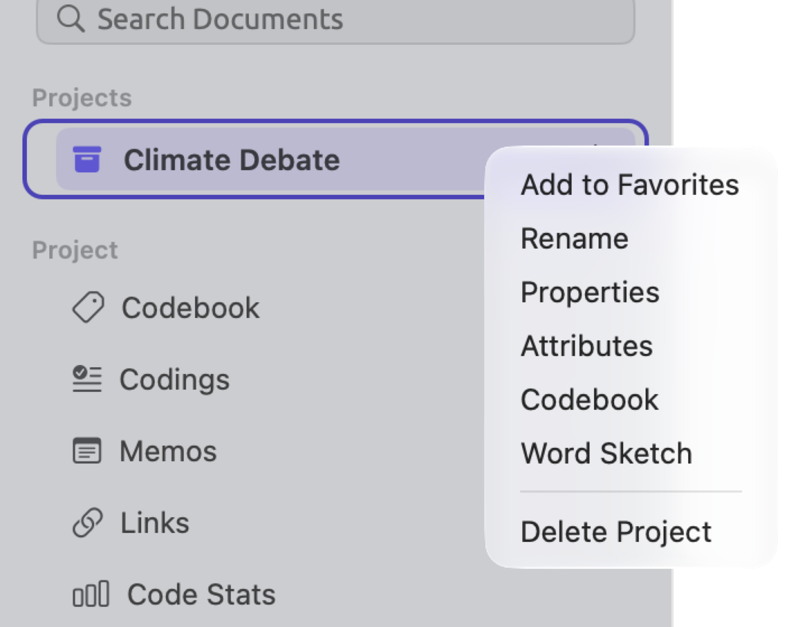
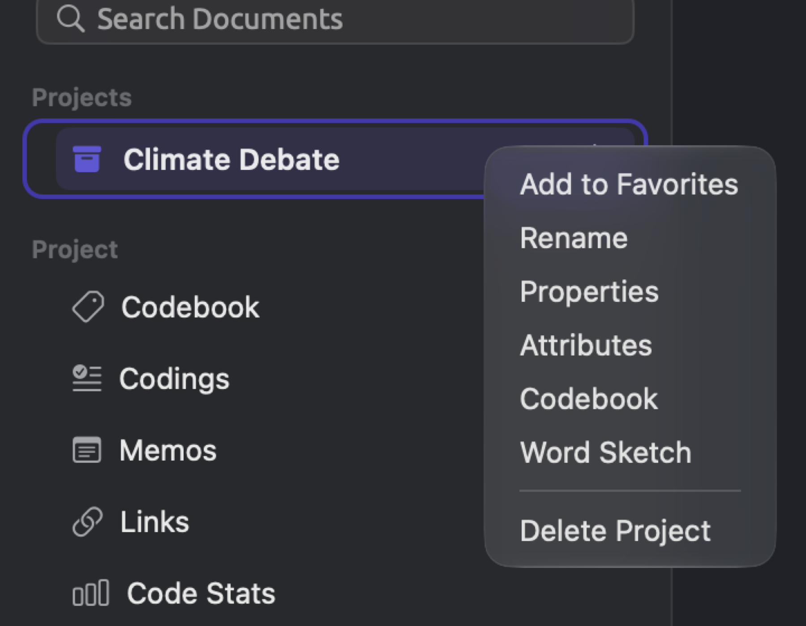
In the menu bar’s Project menu, most items have one of two targets. They either affect the active project or depend upon what you have selected within the sidebar. For instance, New Set, New Smart Set, and Attributes affect the active project, while the document commands (namely, Rename, Properties, Move to Group, Add to Set, Remove from Set, and Translate) work as in the document’s shortcut menu on the currently selected documents from the sidebar. Open lists the ten views of the project shelf. Edit Smart Set is for the smart set in the active tab.
The delete command (⌘⌫) targets whichever item you clicked most recently in the sidebar. The command will read Delete Project, Delete Set, Delete Group, or Delete Document accordingly. If you attempt to delete a project or document, LemmaLoom will prompt for confirmation beforehand. Sets and groups will be removed without asking, though. Use Edit ▸ Undo (⌘Z) afterwards to bring the set or group back.
Project properties
The Project Properties dialog can be opened by choosing Properties from the shortcut menu of a project. With the same fields as New Project, it lets you change a project’s name, color, tags, and/or attributes.
The Save button stays disabled until Name has some entry. Color changes the tint of the project’s box icon in the sidebar. It also tints the highlight behind the icon when the project is the active one. The star of any favorite project in the Projects list assumes the tint too. The Tags window counts the Tags labeling the project. A query over all projects in Window ▸ Queries can find projects by them. In Attributes, there will be a list displaying the names and types of each attribute found within a project. Each item has a remove button (Remove attribute) at the end. Creating an attribute involves clicking Add Attribute.
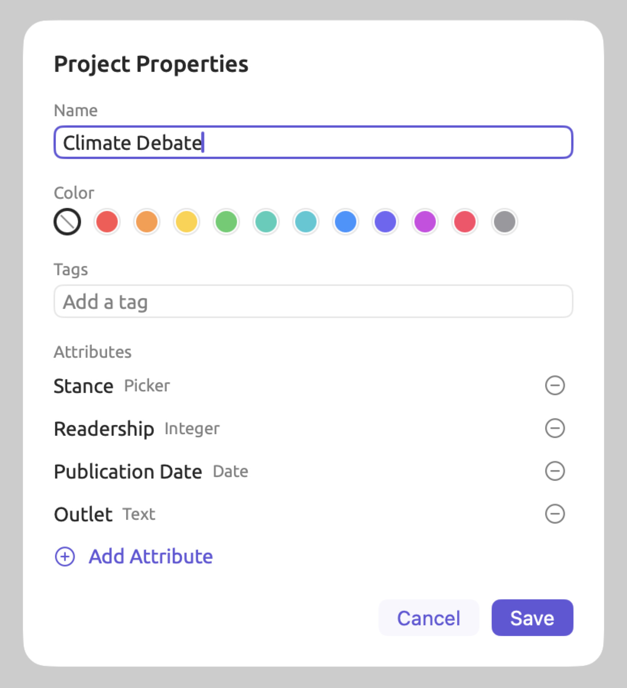
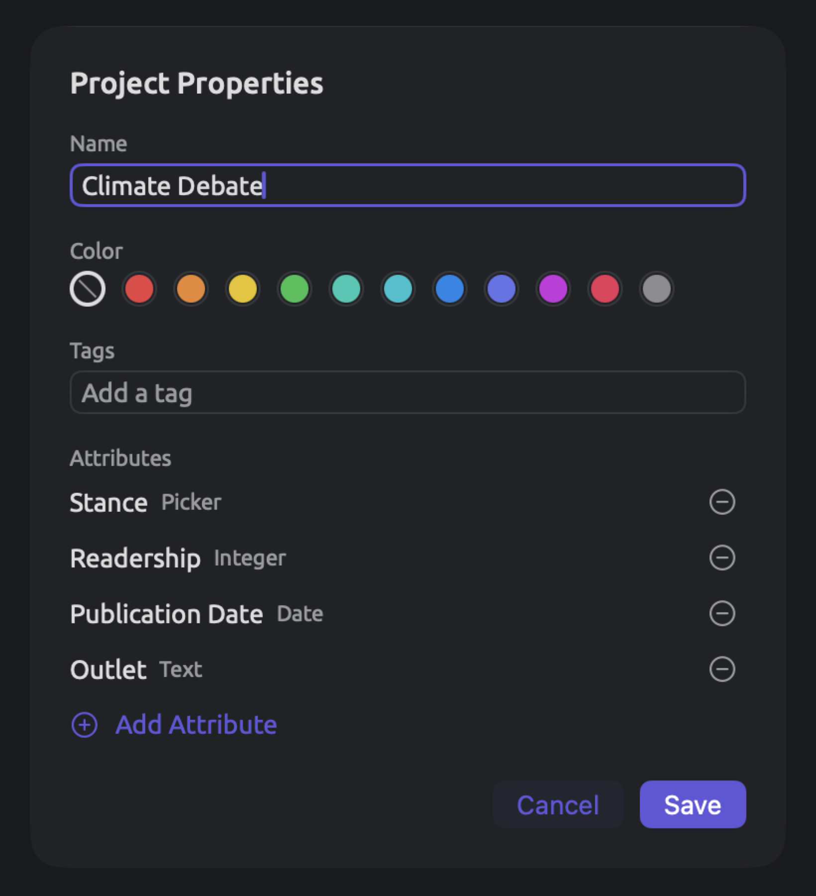
All modifications will be applied at once using Save, as a single step that Edit ▸ Undo Project Properties (⌘Z) takes back.
Deleting a project
- Right-click the project and choose Delete Project. Or click the project and choose Project ▸ Delete Project (⌘⌫).
- An alert names the project and warns that everything in it will be deleted. Click Delete.
All documents of the project are erased along with the project itself. Their media files, translations, codings, memos, links, and bookmarks are erased too, as is everything made for the project as a whole. The same applies to its codes and code sets, sets and groups, and attributes and their values. The dictionaries and the queries saved in the project are erased too. When deleting the active project, the first project left in the list will become active.
Working across projects
Usually, everything within a project (codes, sets, groups, attributes, dictionaries, and saved queries) is isolated. Views generally consider only one project at a time. Some examples of this are the Codebook, Code Stats, the Code Matrix, word sketches, and Sketch Space. Some features reach across all of your projects. With these features, comparisons can be made between studies, or previously developed tools can be reapplied to other studies.
Choosing All Projects in the scope menu at the top of Window ▸ Queries allows querying of the original documents of all your projects together at once. Details regarding this scope can be found in The Queries window and Scopes in Chapter 15, Building a Query. When using rules, testing of the Project field can only occur here. Only at this scope level can a Count or Compare group its results by project. The result list will consequently have a Project column. Some recipes even operate under this scope level, including Codings by Attribute, Rhetoric by Group, and Document Table.
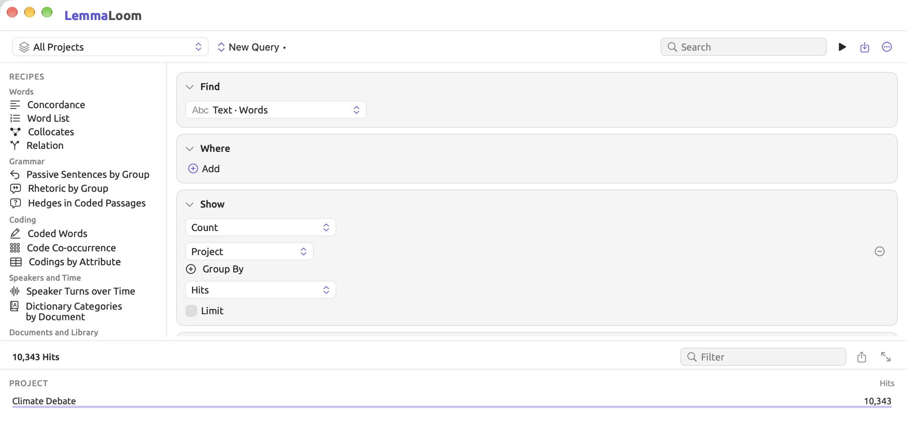
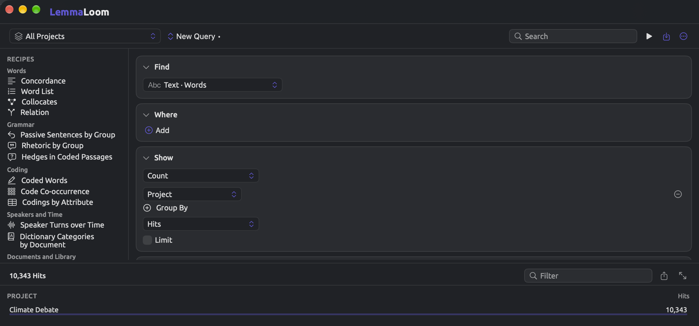
When saving a query, choosing All Projects in Available In makes the query available in every project. If saved as a lens in this manner, then this query can be enabled in any document. Refer to Saving queries in Chapter 15, Building a Query. Tags function this way already; they operate across every project at once. Every instance of a tag (“op-ed” in multiple projects, for example) is the same tag. Tags can also apply to projects as well as individual documents. In turn, a query across all projects can match either documents or projects with specified tags. Further details about tags across all projects can be found in One list for all projects in Chapter 8, Sets, Groups, Tags, and Attributes. Also shared across all projects are custom analyzers (Chapter 20, Custom Analyzers); whatever is written in Window ▸ Analyzers belongs to the whole library and can run on documents in any project, and a query across all projects can count what such an analyzer finds.
If the codebook, the code views, or word sketches need to span several studies, then the material should remain within a single project. Sets, groups, or an attribute can distinguish the studies.
Documents
Documents enter a project via import operations. Chapter 4, Importing Material covers each form of material.
Opening documents in tabs
Clicking a document in the sidebar will open it in a tab directly above the reader and make that tab active. This applies to documents listed in a set as well. If the document is currently opened somewhere in the tab strip, selecting it again in the sidebar will merely make its existing tab active. From the keyboard, navigate the sidebar with the Up Arrow and Down Arrow keys; hitting Return will open the selected document.
Detail views for the project shelf, sets, and tags all open in tabs in the tab strip as well. More information about this is available later in this chapter under The project shelf. When you have at least one tab open, the tab strip itself becomes visible, and you scroll it sideways once there are more tabs than can be displayed in a row.
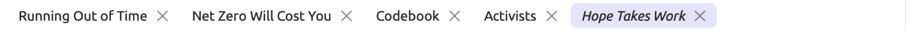
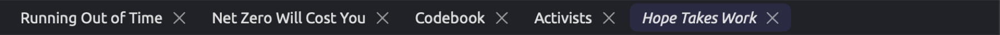
Navigating tabs from the keyboard can be done by choosing Window ▸ Show Next Tab (⇧⌘]) or Window ▸ Show Previous Tab (⇧⌘[). Following the last tab leads you back to the first tab. When right-clicking on a tab, Open in New Window, Open in Split View, and Close Tab appear on the shortcut menu.
When you choose Open in New Window, the document goes to the separate Document window. The Document window always contains a single document; opening a second document replaces the previous one. For a set or tag, Open in New Window will be restricted to those tabs showing Word Sketch or Queries content; for a shelf view, it opens the Codebook, Word Sketch, or Queries window. Open in Split View opens a side-by-side split view containing both your document and whichever other document is active. Split view is described in Chapter 9, Translations and Split View. Open in New Window and Open in Split View can be accessed from the Window menu as well. Their usage changes when invoked from this menu; these commands apply their effect on the active tab. In addition, Open in Split View there lists the open documents that can go beside it.
The preview tab
Preview tabs have italicized titles, and occur whenever you open a result from a query, or display an occurrence from the word sketch of a set or the project itself. Subsequent results open in the same place in the strip, replacing any previous results there.
To keep a preview tab, click on the tab, or select it via the commands Show Next Tab or Show Previous Tab. The title of the tab returns to its normal, upright state, and the tab stays open like any other tab. Clicking on the document within the sidebar will have the same effect. When a document containing a result is already opened in an ordinary tab, LemmaLoom displays the result in that tab. When the document is open in split view, the right-hand pane comes into focus.
Closing tabs
If you click × in a tab, the tab is closed. Alternatively, pressing ⌘W (or choosing File ▸ Close Tab) will close the active tab. When this happens, whichever tab ends up being rightmost after the closure will become active.
With a split view open, ⌘W in the right-hand pane will close the split view; elsewhere, ⌘W acts normally by closing the active tab. In split views, closing the final tab on the left causes the document in the right-hand pane to move to its location.
While a tab is open, selecting File ▸ Close Window (⇧⌘W) will close the main window. In case there isn’t any open tab in the window, instead of Close Window you get to see File ▸ Close (⌘W). This command closes the window and, if it’s the last LemmaLoom window, also quits LemmaLoom.
Selecting several documents
Documents can be selected in bulk. Once selected, the execution of a command occurs on each document simultaneously.
In the Documents section, you can ⌘-click a document to add it to the selection. A second ⌘-click removes it from your selection. A ⇧-click selects a whole range of documents, from the document you clicked last to the one you click now. The range follows the list and includes documents in any closed group and translations underneath the originals. As you make selections, note the number of selected documents at the top of the shortcut menu before attempting to delete.
A plain click on any document selects just that one document and opens it. The same clicks select documents under a set in the Sets section.
When right-clicking on any document in your selection, you’ll open the shortcut menu. At its head, there is the count of selected documents, for instance, 3 documents selected. If exactly two documents are selected, then the Open Side by Side command puts the one higher in the list in the main pane, while placing the lower one in split view. You can select Move to Group, choosing from Ungrouped, each possible group, and New Group. Choose Add to Set to see a list of each set you fill by hand and New Set from Documents. If a set already holds all selected documents, it appears disabled there. When a translation is among your selection, its original gets added. Export saves the selected documents in a LemmaLoom archive (see Chapter 22, Exchanging and Exporting). The menu ends with Delete Documents (see Deleting documents later in this chapter).


The document’s shortcut menu
Right-clicking on a single document in the Documents section will produce this shortcut menu for it:
| Command | What it does |
|---|---|
| Open in Split View | Opens the document beside the active one. Disabled when no other document is active, or when this one is already in split view. |
| Open Beside Original | Shown for a translation. Opens the original on the left and the translation on the right. |
| Rename | Turns the name into a text field. |
| Move to Group | Moves the document and its translations into a group, or out of every group with Ungrouped. |
| Sets | Adds the document to a set, or makes a new set from it with New Set from Document. |
| Properties | Opens Document Properties (see Document properties below). |
| Translate | Translates the document. See Chapter 9, Translations and Split View. |
| Export | Saves the document in a LemmaLoom archive. |
| Retry Indexing | Appears when indexing failed, below a line that says why. |
| Delete Document | Deletes the document after asking (see Deleting documents later in this chapter). |
Translations travel together with their originals wherever you move them. Use Move to Group and Sets actions on the original document. When you require an additional translation for the document, translate the original document once again. Under any set, a document’s shortcut menu begins with Open; within a manually populated set, it ends with Remove from Set.
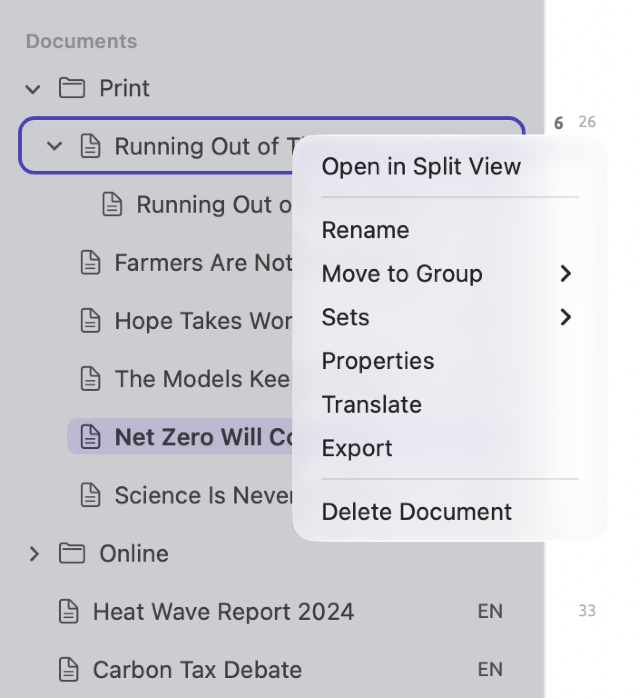
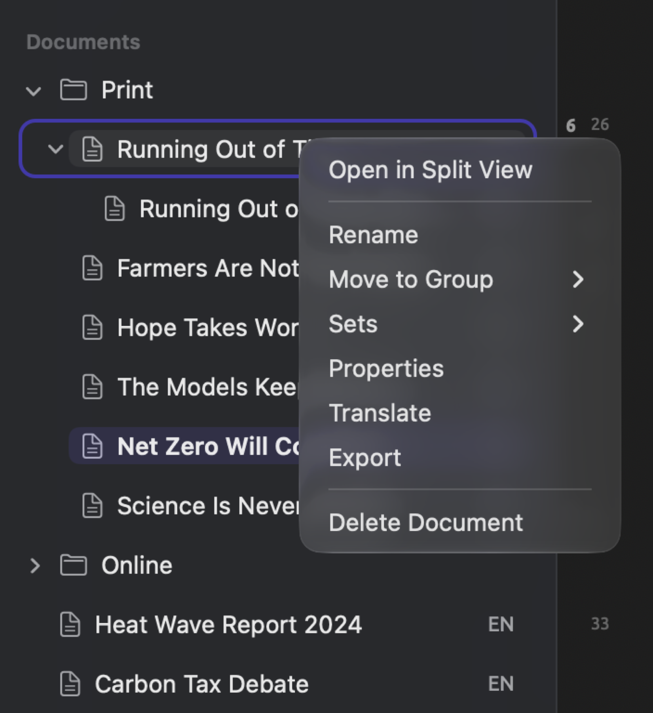
Renaming a document
- Right-click the document and choose Rename.
- Type the new name and press Return.
Press Escape to restore the old name. Clicking elsewhere keeps the new name. Edit ▸ Undo Rename (⌘Z) restores the old name. Alternatively, you may rename your document in Document Properties.
Document properties
Beyond the text itself, all the metadata LemmaLoom stores on a document can be found in Document Properties. For example, “Running Out of Time” from “Climate Debate” has the date August 21, 2024. It bears the tag “op-ed”. Its values for the project’s four attributes will let you categorize it and compare it with the rest of the documents within the project.
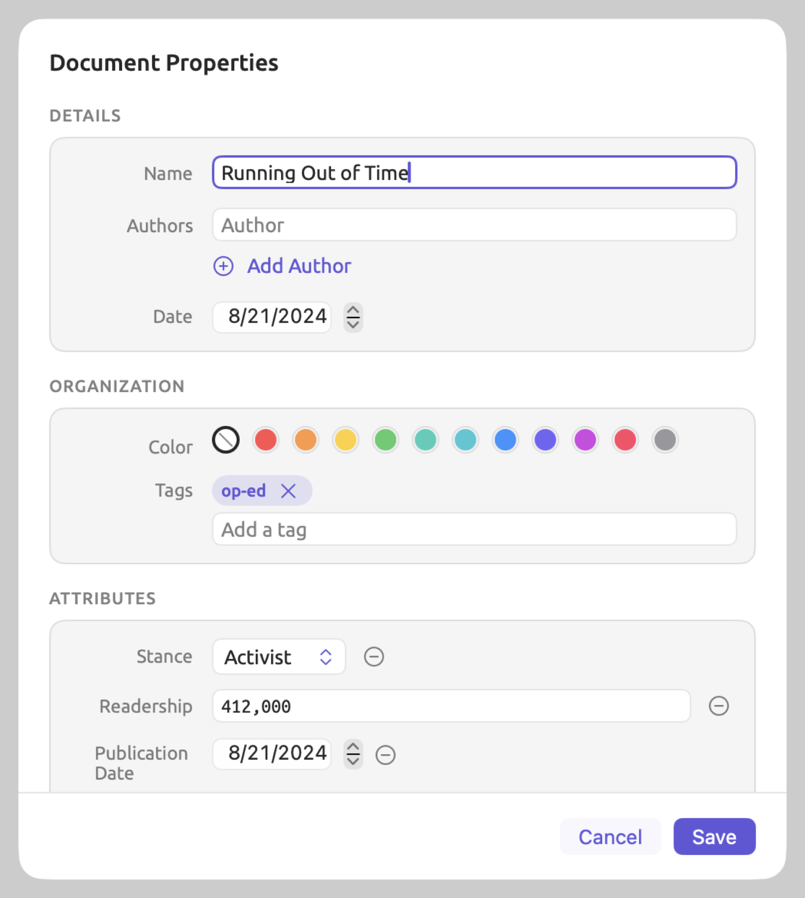
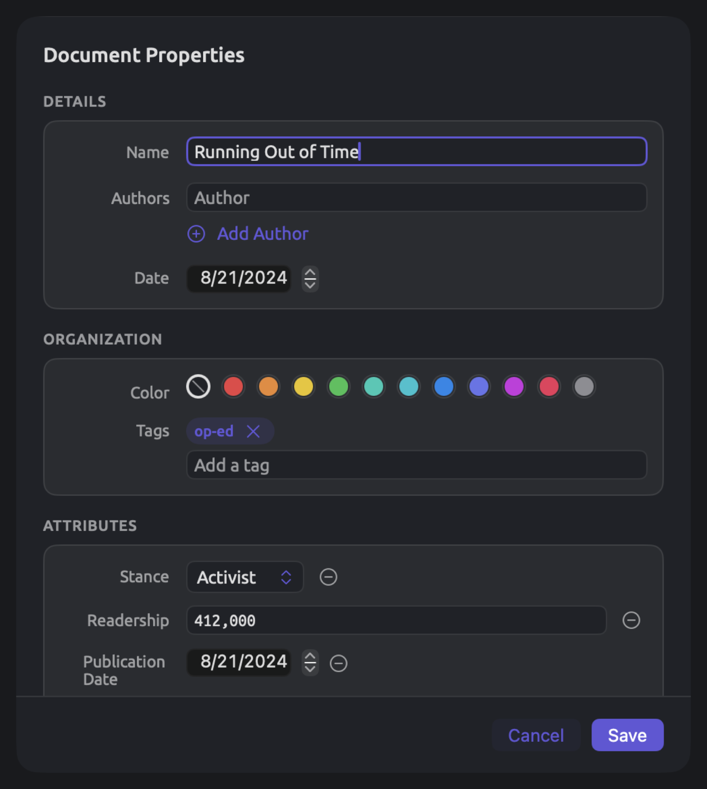
To modify a document’s properties:
- Right-click the document in the sidebar and choose Properties.
- Make your changes in Details, Organization, Attributes, Citation, and Indexing.
- Click Save.
Save applies your changes as a single action. Edit ▸ Undo Document Properties (⌘Z) will revert all of them simultaneously. Cancel discards all of your changes and closes the dialog.
Details
Name appears in the navigation sidebar, on the document’s tab, as well as in the results of every analysis. Name must be filled for Save to be enabled.
Authors contains one author per line. Add Author adds another line for an author. If multiple lines exist, each has a remove button (Remove author). Lines that are left empty are automatically deleted upon saving.
Date refers to the date the document was recorded, written, or published.
Organization
Color sets the color for your document from the eleven colors available, or No color. Filtering documents based on color can be accomplished with smart sets and queries. Color affects both the icon for the document in the navigation sidebar and its tab highlight.
Tags takes tags one-by-one. As soon as you finish entering your tag, hit the Return key or put a comma next to it to complete it. Entering just three characters brings up autocomplete suggestions for previous tags that match what you are entering; these matches ignore case differences. If you type in Viral, LemmaLoom automatically assigns the existing tag “viral”. There is also an × button beside every tag which removes the tag.
Should the document happen to possess translations, then the document shares the same tags as its translations. Editing the tags for one affects all others.
Attributes
In this part, the values of the attributes of this document are provided, with controls depending on their types. The checkbox control represents the value of a Boolean attribute; the date picker controls represent Date attributes; number controls represent Integer and Decimal attributes; and text controls represent Text attributes. Finally, Picker attributes are represented by menus of their choices that allow None as well.
The addition of a value for another attribute requires these actions:
- Type the attribute’s name in the empty field at the bottom. Suggestions appear as you type.
- If the name is new to the project, choose its Type. For a Picker, also type its choices, one per row.
- Click Add Attribute, or press Return. The attribute joins the list.
- Enter the value.
When an attribute is made using this dialog, the attribute belongs to the whole project and no other documents currently hold a value for that attribute. The remove button (Remove attribute) next to a value deletes that attribute’s value from this document without deleting the attribute altogether.
The Add Attribute button is disabled if there isn’t a name in the name field, if the attribute is already listed (Already added), or if a new picker has no choices (No options). Hover the mouse pointer over the Add Attribute button to discover which reason matches your situation.
For setting an attribute value across multiple documents, visit the Attributes window. This lists the attribute values for all the documents side-by-side. See The Attributes window in Chapter 8, Sets, Groups, Tags, and Attributes.
Citation
Citation details include the Publisher, Publication, URL, and DOI fields, which tell you where the published document came from. The Publication field refers to where the document was published, such as in a journal or on a website. In the bundled “Climate Debate” project, the URL field for “Carbon Tax Debate” is the web address from which the document was imported.
Both Import Document and Import from Web dialogs have these same fields. These can all be filled out at import time (refer to Chapter 4, Importing Material for more details).
Smart sets and queries may filter based upon citation details as well as the authors and the date. Exported projects in REFI-QDA file format save all citation details in each document’s description. Programs supporting REFI-QDA are capable of recognizing these details within the exported documents’ descriptions.
Indexing
At the top of this section, a document imported without indexing shows Indexing is off. You will see an Index Now button there to begin the indexing process. Please refer to Importing without indexing in Chapter 21, Analysis and Indexing for whether to leave indexing off at all.
The grammar analysis a document gets depends on what you select in Language. Your choices here include English, German, and Chinese. Or, you could choose Automatic, which makes LemmaLoom detect the language based on the content of the text. If the language is detected to be French, for instance, it will be displayed along with the other options in the menu. Saving a change to your choice of language results in reindexing the document. Automatic will then make the language detected by LemmaLoom appear in the menu. Nonetheless, you can still read and code a document in any other language; its badge in the navigation sidebar shows Language not supported for indexing.
Analyzers lists out the analyzers available to you in this language for your document. These consist of the built-in Cohesion, Metadiscourse, and Rhetoric analyzers, as well as any custom analyzers for this language you have defined (see Chapter 20, Custom Analyzers). Next to each analyzer is its status, which could be Done, Out of Date, Not Run, Running, or Failed. Results become Out of Date when a previous version of an analyzer was responsible for creating them, or due to editing a document that caused existing results to cover less than the entirety of the document’s text. Hover the mouse pointer over rows with a status of Failed to find out the cause.
The Run button enables you to update results of an analyzer whose results have become Out of Date or haven’t been generated yet. This button remains disabled until indexing is complete for the document. The trash button (Remove Output) removes all results produced by this analyzer for this document; the analyzer won’t run during subsequent indexing sessions until you click Run.
Run, Remove Output, and Index Now actions take place immediately upon clicking. None of them require confirmation with Save.
Patterns under Exclude from indexing prevent grammar analysis from analyzing specific text. Examples of such text are timestamps and labels identifying speakers in transcripts. Matching text stays visible in the reader, and you can still create codings within it.
Patterns need to be defined using a regular expression notation, which describes a particular kind of text concisely. The example \[\d+:\d+\] refers to timestamps such as [12:04], whereby \d+ matches one or several digits, whereas both \[ and \] match the square brackets themselves. This is equivalent to the preset pattern Timestamps [mm:ss].
Type a pattern directly in the field provided and click Add or press Return. Presets provides access to five predefined patterns, including Timestamps [hh:mm:ss], Timestamps [mm:ss], Speaker labels, Web addresses, and Email addresses. After these comes the list of your saved patterns in Settings (see Chapter 24, Settings and Appearance). If a preset is already included in the list, Presets shows it disabled. The pattern Speaker labels catches numbered speaker labels such as Speaker 1:, while you should write your own custom pattern for named speakers. One example could be something like (Host|Activist|Skeptic):. The alternatives are separated with the vertical bar character.
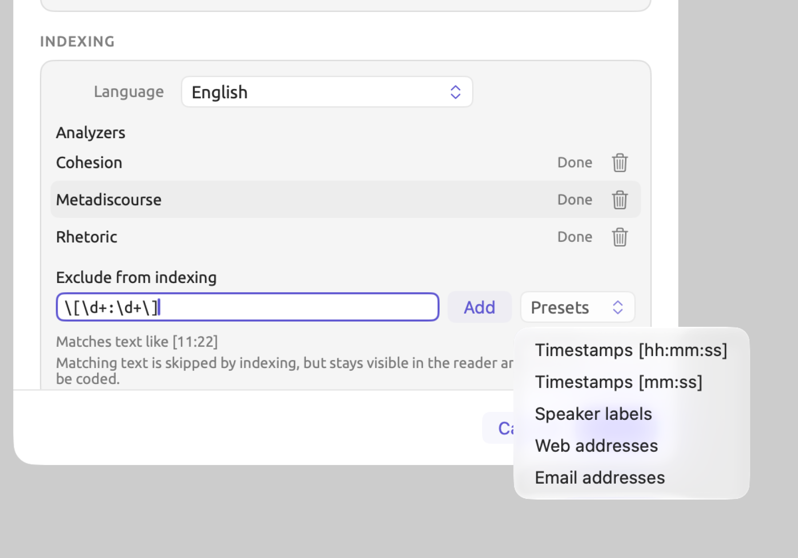
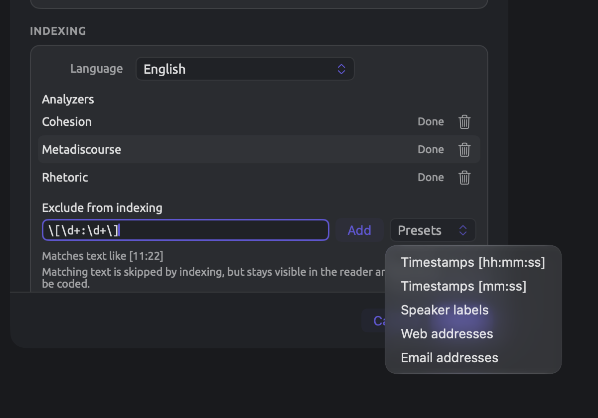
Under every pattern you define is an example matching it, in a line starting with Matches text like. Valid pattern appears under a valid pattern if it can’t provide any examples. As you type, the field shows the same line under it. Invalid patterns will make LemmaLoom display the message Not a valid pattern below, and Add then stays disabled.
Each pattern’s row ends in a remove button (Remove pattern). Clicking Save also adds a valid pattern that’s still in the field. Saved changes to patterns trigger indexing the document again.
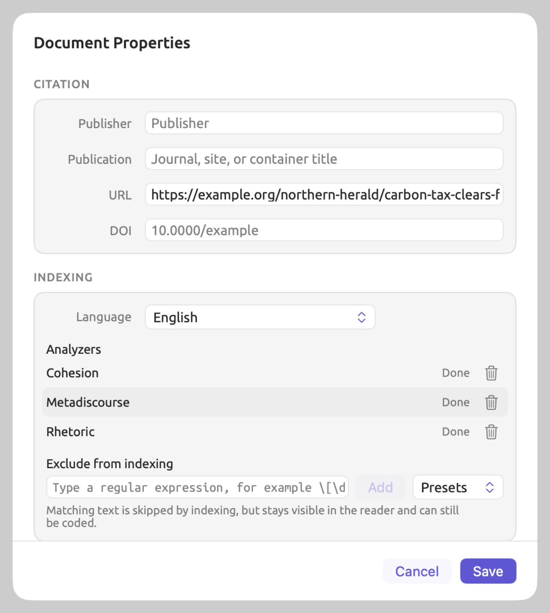
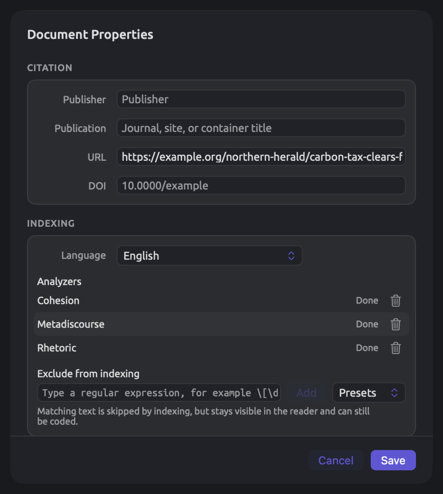
The source file
LemmaLoom keeps track of where your document originates. It may be the name of the file or web page address your document came from. Smart sets and queries are equipped with two fields that rely on this metadata. For example, you could use Source File to locate all the documents you had imported from a file whose name contains report. Your document’s Format can be Text, PDF, Web Pages, Audio, or Video. If your document comes from an audio or video recording, its format depends on which media it came from. For documents from a REFI-QDA project, Source File is empty. Their Format is Text if they aren’t recordings.
Deleting documents
- Right-click the document and choose Delete Document. For several documents, select them first (see Selecting several documents earlier in this chapter) and choose Delete Documents. With the documents selected under Documents in the sidebar, Project ▸ Delete Document or Delete Documents (⌘⌫) does the same.
- An alert names the document, or gives the number of documents, and warns that everything in them will be deleted. Click Delete.
Deleting a document removes its text, media file, and grammar analysis. Its codings, memos, links, bookmarks, and attribute values will be removed too. Codes scoped to the document will be removed along with it. See Where a code can be used in Chapter 7, Coding. All sets that included the document will have it removed as well. If queries were saved for this document alone, they become project-level queries. Deleting an original deletes its translations too. Deleting a translation by itself moves codes scoped to it over to the original. If you delete a document accidentally, it can be restored via Edit ▸ Undo Delete Document (⌘Z), or Edit ▸ Undo Delete Documents should you delete multiple documents simultaneously. All the previously mentioned items will return alongside the document, with indexing being done in the background. The undo history exists until you quit LemmaLoom. See Chapter 23, Undo and Redo for undo history and other undoable actions.
Groups
Groups serve as containers for organizing documents. Only one group may contain each document, while translations are always contained within the same group as their original. “Climate Debate” has two groups called “Print” and “Online”; they categorize documents according to whether they appeared in print or online. These groups are for reading the list. Comparisons in “Climate Debate” rely on the attribute “Stance” and document sets.
Documents lists the groups chronologically based on creation time. Ungrouped documents follow below all of the existing groups. Whenever you open LemmaLoom, all groups begin collapsed; expand them by clicking their disclosure triangles.
Creating a group involves these steps:
- Choose File ▸ New Group (⌥⌘N). A group called New Group appears, with its name selected.
- Type a name and press Return.
When you have two or more documents selected, right-click on one of them and select Move to Group ▸ New Group. All of those documents move to the new group, and it is already open. You can immediately give the group its name. Project ▸ Move to Group ▸ New Group performs the function on a single selected document similarly.
Move a single document via right-clicking on it and selecting the appropriate group under Move to Group. Notice that if the document already belongs to a group, that particular option will be disabled. Selecting the Ungrouped option moves the document alongside other ungrouped documents. Within its new group, a moved document appears as the last member. When importing a document using the Import Document dialog, you may specify the Group you wish to place the document in.
Right-click the group for Rename and Delete Group. Alternatively, click on it and choose Project ▸ Delete Group (⌘⌫). Deleting the group results in moving its documents outside of it to join other documents that do not belong to any groups. Smart-set conditions that named the deleted group lose it, so a condition such as Group is any of “Print” is left with nothing chosen; such a condition evaluates to false against every document. Editing that smart set is necessary thereafter. Edit ▸ Undo (⌘Z) allows undoing group changes made previously, deletions included.
Sets and tags in the navigation sidebar
Each set under Sets displays its number of documents next to it. A set you fill manually has a stack icon next to it. There will be a filter icon next to a smart set instead. Clicking the triangle beside a set will display its list of documents, while clicking a document from that list will open it. Opening a set in its own tab requires a click on its name (refer to The project shelf below). New Set will create an empty set, with its name in an active text field. New Smart Set, meanwhile, will launch the editor for a new smart set’s conditions. Each set has a shortcut menu with Open Set, Word Sketch, Rename, Edit (only applies to smart sets), Export, and Delete Set. More on sets can be found in Chapter 8, Sets, Groups, Tags, and Attributes. Right-clicking a document within a manually filled set will display Remove from Set. If multiple documents are selected under that set, they will all be removed.
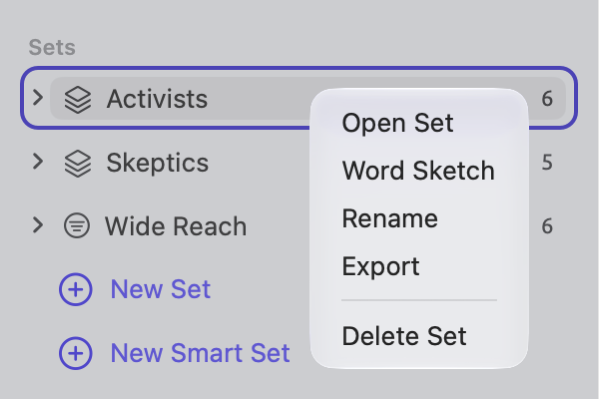
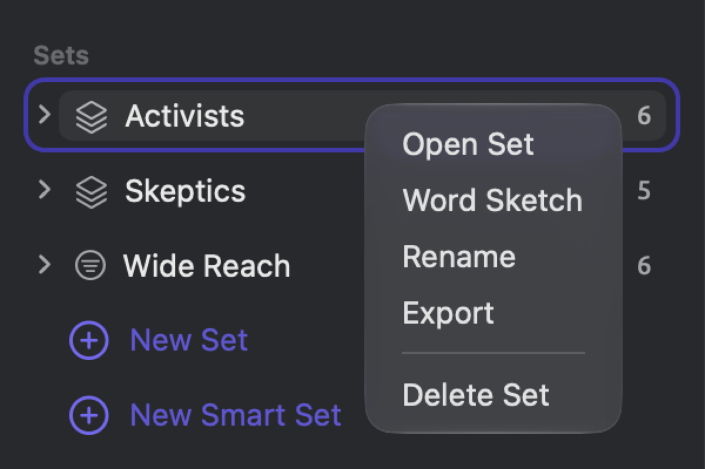
Translations belong to the same sets as their originals. Only the original document is listed in sets. Adding a translation to a set adds its original.
Tags are listed under Tags. Clicking a tag opens a tab with the same ten views as a set, covering the tag’s documents. Each tag has Word Sketch available via its shortcut menu, for a word sketch of its documents. Also available are Rename and Delete Tag, which work as in the Tags window below; either one changes the tag globally, across all projects.
The Tags window
In Window ▸ Tags, you will see the list of tags all your projects share, together with the number of times each tag is used. For example, there are three documents tagged “op-ed” in the project “Climate Debate”; namely, “Running Out of Time”, “Net Zero Will Cost You”, and “Who Pays for the Transition”. There are two documents tagged “viral”, which are “Letter from the Climate Strike” and “Let’s Not Panic”. You also rename, merge, and delete tags in this window.
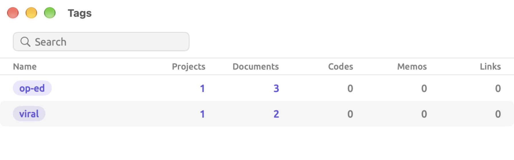
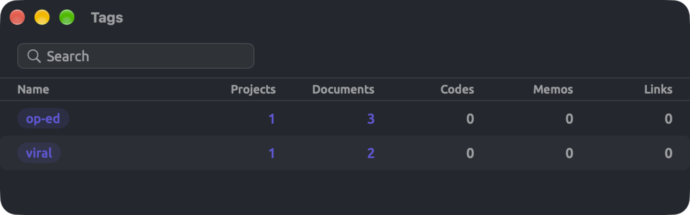
The Tags window displays five counts adjacent to each tag, in the columns Projects, Documents, Codes, Memos, and Links. While the first count includes every project that uses the tag, whether on the project itself (in New Project or Project Properties) or on any of its documents, codes, memos, or links, the latter four counts are specific to the active project, allowing each of the numbers to correspond to the result obtained upon clicking. Even a tag that is found exclusively in other projects gets listed in the table; its counts under Documents, Codes, Memos, and Links equal 0. The Documents count reflects how many documents contain the tag, counting an original and its translations once, since they carry the same tags. Tags can be filtered by typing part of a name in Search. No distinction is made between capitalization in tags; “viral” is considered to be identical to “Viral”, and whichever spelling is seen more often is displayed.
Tags can be selected via clicking, and opened in a tab within the main window by double-clicking or pressing Return. Clicking a tag under Tags in the navigation sidebar does precisely the same thing. Every count greater than zero can be clicked. Documents counts bring forth the tag’s documents in a new tab, the same as double-clicking the row, whereas Codes counts filter the Codebook of the active project to what carries the tag; similarly Memos and Links counts filter the Memos and Links views. The × on the tag at the top of the view (Remove filter) returns to displaying all entries. A count under Projects displays a list of projects that use the tag; selecting one makes it the active project.
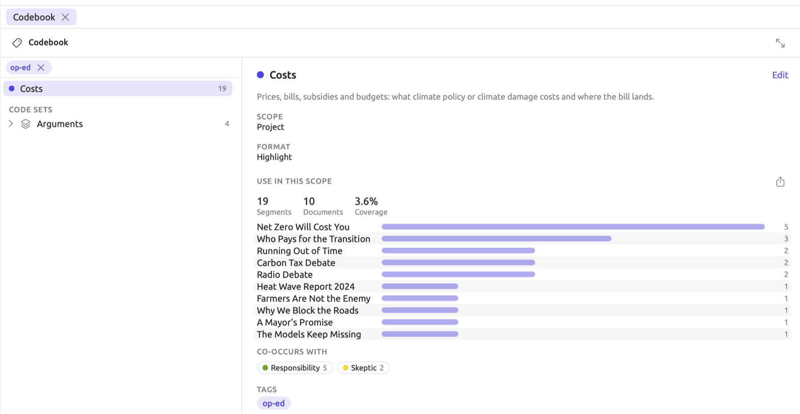
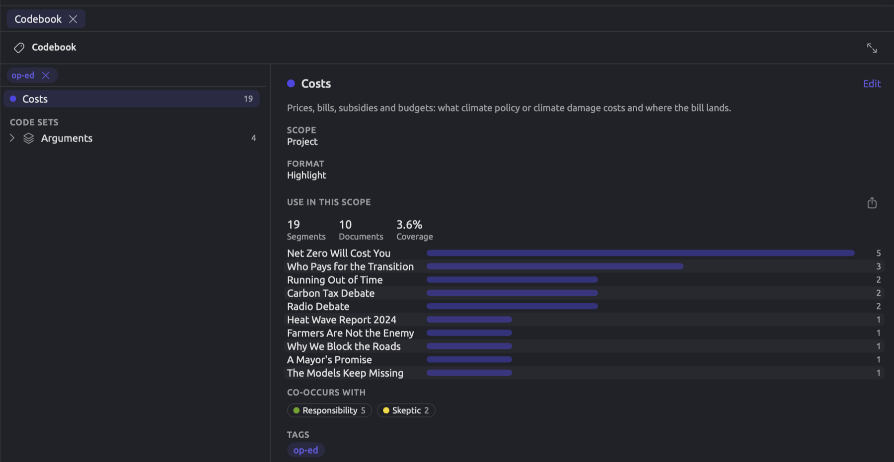
Renaming tags can be performed as follows:
- Right-click the tag and choose Rename.
- Type the new name and press Return. Escape cancels.
When renaming a tag, the new name applies to every project, document, code, memo, and link that has that tag attached to it. All smart set conditions and query rules which name the tag are updated accordingly. If the tag is open in a tab, the tab uses the new name. Renaming a tag with the name of another tag merges both tags under the latter’s name.
Choosing Delete from a tag’s shortcut menu deletes the tag. Every occurrence of the tag gets deleted from everything that carries it across all projects. Any tab displaying the tag within the main window is closed automatically.
Edit ▸ Undo Rename Tag (or Edit ▸ Undo Delete Tag, ⌘Z) reverts your last rename or deletion. The command is available while the Tags window is active.
The project shelf
The project shelf is used for interacting with the entire project itself. Within the Project section of the navigation sidebar are ten detail views available, each applying to all documents within the currently active project. Once clicked upon, these views open in tabs adjacent to your documents, titled according to which view they are (such as Code Stats).
If you are interested in seeing one specific subset of your project, then you need to open either a set or tag of your choosing. Doing so results in the opening of these same ten detail views, now restricted only to the documents within this subset. Within the “Climate Debate” project, opening the “Activists” set will load these ten views exclusively on its six activist texts. Tabs for these subsets of documents feature both the name of the subset and its number of documents. The tab also has a row of buttons representing each view. By default, the Codebook view will be displayed, but clicking any of the others switches to that particular view. Should your window width become insufficient, a menu will replace these buttons.
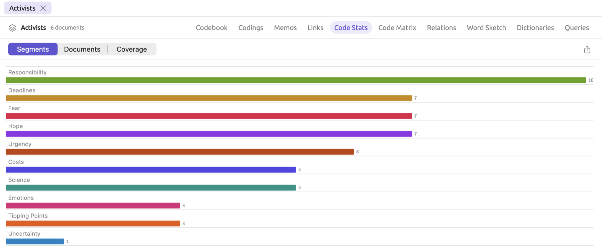
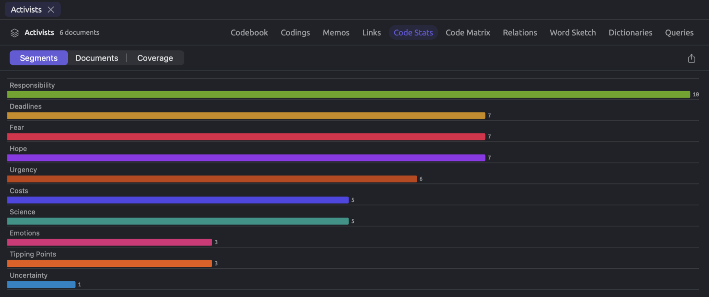
| View | What it shows | Described in |
|---|---|---|
| Codebook | The code tree with each code’s number of segments. For the selected code, its description, its segments, documents, and coverage in the scope, the documents that use it, and the codes it occurs with. | Chapter 7, Coding |
| Codings | Every coded segment in the scope with its code and document. You can search and filter the list, and open a segment in its document. | Chapter 13, Analyzing Codes |
| Memos | The memos in the scope, with the document and code each one belongs to. | Chapter 7, Coding |
| Links | The links between passages in the scope, with both of their ends. | Chapter 7, Coding |
| Code Stats | How often each code is applied and how much text it covers, with breakdowns by attribute. | Chapter 13, Analyzing Codes |
| Code Matrix | A table of how often each code is applied in each document, with a row for each code. Group columns by combines the documents by an attribute, group, language, or format. | Chapter 13, Analyzing Codes |
| Relations | A table of how often codes overlap in the same passages. | Chapter 13, Analyzing Codes |
| Word Sketch | For a word you choose, the words it combines with, grouped by grammatical relation, across the scope. | Chapter 12, Word Sketch |
| Dictionaries | The project’s dictionaries, and counts of each category’s terms across the scope. | Chapter 19, Dictionaries |
| Queries | The query builder, searching the documents in the scope. | Chapter 15, Building a Query |
When opening a view in its own window beside the reader, use Open in a window. This button looks like two diagonal arrows and sits at the right end of the bar above the view. The Word Sketch window will contain Word Sketch, whereas the Queries window contains Queries. All eight other views will open within the Codebook window; this window contains buttons for each of the ten views aligned horizontally at its top. From a set or tag tab, only Word Sketch and Queries will open in their respective windows. This action can either be performed from the button or by right-clicking on the tab itself and choosing Open in New Window. You can also open the Codebook window using the menu item Window ▸ Codebook or by right-clicking on the project and choosing Codebook.
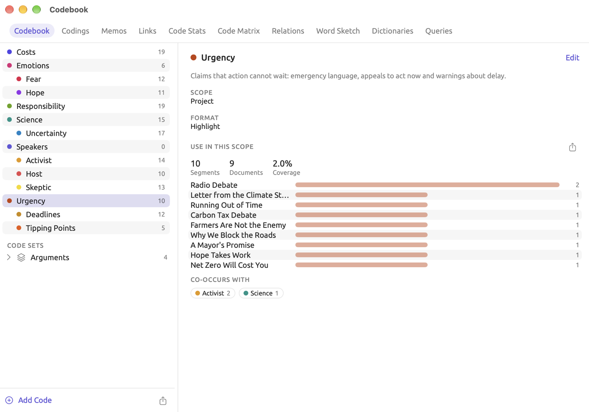
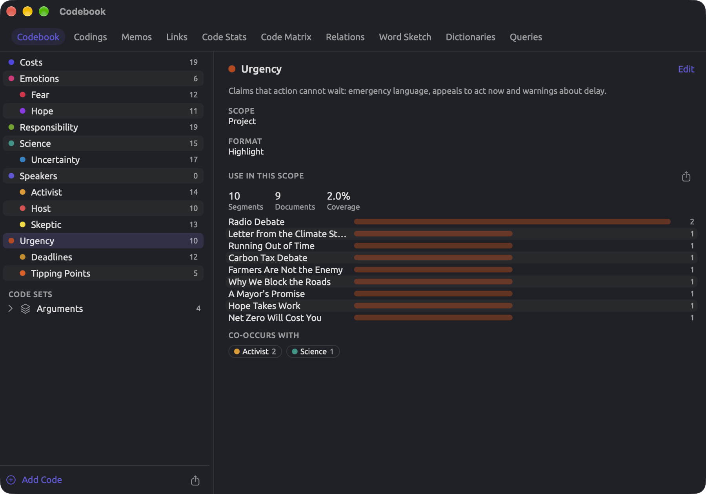